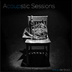

| ALBUM COVER | ARTIST | ALBUM TITLE | RELEASE INFO | WORK TYPE |
|---|---|---|---|---|
 |
TROP | TROP |
Genre: Electronic Label: Encrypted Audio Release Date: Feb 01, 2017 |
Composition/ Mixing/ Mastering |
| Vassily Primakov | Variations | Handel, Schuman, Rachmaninoff, Liebermann |
Genre: Classical Label: LP Classics Release Date: December 15, 2016 |
Recording/ Editing/ Mastering |
|
| Jerome Lowenthal | Live in Concert 1964-2001 Two CD Set |
Genre: Classical Label: LP Classics Release Date: Sep 30, 2016 |
Mastering | |
| Vassily Primakov | TCHAIKOVSKY Seasons/MUSSORGSKY Pictures at an Exhibition |
Genre: Classical Label: LP Classics Release Date: Sep 15, 2016 |
Recording/ Editing/ Mastering |
|
| Marina Gorokholinsky | Brahms/Mendelssohn/Rachmaninoff /Scriabin/Prokofiev |
Genre: Classical Label: LP Classics Release Date: July 01, 2016 |
Recording/ Editing/ Mastering |
|
| Margarita Shevchenko | Chopin Scherzos/Sonata No. 3 |
Genre: Classical Label: LP Classics Release Date: June 15, 2016 |
Mastering | |
| Vera Gornostaeva | Vol IX = Rachmaninoff Concerto /12 Preludes |
Genre: Classical Label: LP Classics Release Date: Jun 01, 2016 |
Restoration/ Mastering |
|
| Tatiana Chulochnikova & Anastasia Dedik |
Akimenko: Music for Violin & Piano |
Genre: Classical Label: Toccata Classics Release Date: Jul 01, 2016 |
Editing/ Mastering |
|
|  | Coup de Brass | Acoupstic Sessions |
Genre: Classical/Pop Label: Coup de Brass Release Date: Mar 26, 2016 |
Recording/ Editing/ Mixing/ Mastering |
| Oxana Mikhailoff | Russian Fairy Tales |
Genre: Classical Label: LP Classics Release Date: Nov 01, 2015 |
Recording/ Editing/ Mixing/ Mastering |
|
| Dr. Dan, Science Man | Sound Science Music |
Genre: Pop/Rock Label: Phat Photonics Release Date: Jan 12, 2016 |
Re-Sampling/ Mixing/ Mastering |
|
| Aventure Duo | Rachmaninoff/Brahms |
Genre: Electronic Label: LP Classics Release Date: Nov 01, 2015 |
Recording/ Editing/ Mixing/ Mastering |
|
| Vera Gornostaeva | Vol.8: Schumann - Tchaikovsky |
Genre: Classical Label: LP Classics Release Date: Dec 08, 2015 |
Restoration/ Mastering |
|
| Vera Gornostaeva | Vol.7: Beethoven Sonatas - In Memoriam |
Genre: Classical Label: LP Classics Release Date: Dec 08, 2015 |
Restoration/ Mastering |
|
| Timofei Dokshizer | Russian Miniatures |
Genre: Classical Label: LP Classics Release Date: Nov 01, 2015 |
Restoration/ Mastering |
|
| Anastasia Dedik | Mussorgsky, Tchaikovsky |
Genre: Classical Label: Anastasia Dedik Release Date: Sep 15, 2015 |
Recording/ Editing/ Mixing/ Mastering |
|
| Ben Capps | Chopin & Rachmaninoff: Cello Sonatas |
Genre: Classical Label: LP Classics Release Date: Apr 15, 2015 |
Recording/ Editing/ Mixing/ Mastering |
|
| Kronodigger | Subliminal Design |
Genre: Electronic Label: Kronodigger Release Date: Mar 15, 2015 |
Composition/ Mixing/ Mastering |
|
| Vassily Primakov | Chopin: 51 Mazurkas (2CD set) |
Genre: Classical Label: LP Classics Release Date: Mar 13, 2015 |
Recording/ Editing/ Mixing/ Mastering |
|
| Alexander Russakovsky | Cello Sonatas |
Genre: Classical Label: Brilliant Classics Release Date: May 27, 2014 |
Editing/ Mixing/ Mastering |
|
| Alexander Slobodyanik | Mayo 20th Anniversary: Slobodyanik (Live) |
Genre: Classical Label: LP Classics Release Date: Mar 13, 2015 |
Restoration/ Mastering |
|
| Alexey Gorokholinsky | Grand Duo |
Genre: Classical Label: LP Classics Release Date: Mar 13, 2015 |
Recording/ Editing/ Mixing/ Mastering |
|
| Ada Gorbunova | Schumann (2CD set) |
Genre: Classical Label: LP Classics Release Date: Mar 13, 2015 |
Recording/ Editing/ Mixing/ Mastering |
|
| Vera Gornostaeva | Vol.6 - Chopin Ballades Mazurkas |
Genre: Classical Label: LP Classics Release Date: Dec 01, 2014 |
Restoration/ Mastering |
|
| Vera Gornostaeva | Vol.5 - Shostakovich/Prokofiev |
Genre: Classical Label: LP Classics Release Date: Dec 01, 2015 |
Restoration/ Mastering |
|
| Vera Gornostaeva | Vol.4 - Schumann/Liszt/Schubert |
Genre: Classical Label: LP Classics Release Date: Aug 15, 2014 |
Restoration/ Mastering |
|
| Ben Capps | Ossia |
Genre: Classical Label: LP Classics Release Date: Aug 15, 2014 |
Recording/ Editing/ Mixing/ Mastering |
|
| Vassily Primakov & Natalia Lavrova |
Braam van Eeden Piano Sonatas - Passione |
Genre: Classical Label: LP Classics Release Date: Aug 15, 2014 |
Recording/ Editing/ Mixing/ Mastering |
|
| Jerome Lowenthal | Beethoven Concerto No. 4/ Cadenzas |
Genre: Classical Label: LP Classics Release Date: Feb 01, 2017 |
Mastering | |
| Lavrova Primakov Piano Duo | Rachmaninoff Music for Two Pianos |
Genre: Classical Label: LP Classics Release Date: Apr 29, 2014 |
Recording/ Editing/ Mixing/ Mastering |
|
| Lavrova Primakov Piano Duo | Live from Gina Bachauser Scriabin Brahms Busoni Liszt |
Genre: Classical Label: LP Classics Release Date: Jan 30, 2014 |
Mastering | |
| Vera Gornostaeva | Vol.3 Beethoven: Op.73 "Emperor" Mozart: K.466 |
Genre: Classical Label: LP Classics Release Date: Jan 01, 2014 |
Restoration/ Mastering |
|
| David Aladashvili | Opus 13 |
Genre: Classical Label: LP Classics Release Date: Dec 13, 2013 |
Composition/ Recording Mixing/ Mastering |